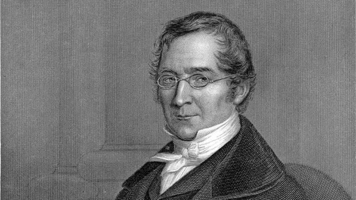

Joseph Louis Gay-Lussac · 1808
Definisi
Hukum Perbandingan Volume (Gay-Lussac's Law of Combining Volumes) menyatakan bahwa pada suhu dan tekanan yang sama, volume gas-gas yang bereaksi dan volume gas-gas hasil reaksi berbanding sebagai bilangan bulat dan sederhana.
Berlaku hanya untuk zat berwujud gas, pada kondisi suhu (T) dan tekanan (P) yang sama.
Penemu

Gay-LussacJoseph Louis Gay-Lussac
6 Des 1778 — 9 Mei 1850
Saint-Léonard, Prancis
Joseph Louis Gay-Lussac adalah fisikawan dan kimiawan Prancis yang terkenal dengan berbagai kontribusi pada ilmu gas. Ia adalah salah satu ilmuwan paling produktif di awal abad ke-19.
Selain hukum perbandingan volume, Gay-Lussac juga menemukan Hukum Gay-Lussac tentang hubungan tekanan dan suhu gas (P ∝ T), serta turut mengidentifikasi boron sebagai unsur baru bersama Thenard.
Penemuannya tentang volume gas yang bereaksi menginspirasi Avogadro untuk merumuskan hipotesisnya tentang jumlah molekul dalam volume gas yang sama.
Visualisasi Reaksi
Rasio volume: H₂ : O₂ : H₂O = 2 : 1 : 2 — bilangan bulat sederhana ✓
* Tinggi silinder merepresentasikan perbandingan volume relatif pada P dan T sama
Data Eksperimen
| Reaksi | Gas A (vol) | Gas B (vol) | Produk (vol) | Rasio Bulat |
|---|---|---|---|---|
| H₂ + Cl₂ → 2HCl | 1 (H₂) | 1 (Cl₂) | 2 (HCl) | 1:1:2 |
| N₂ + 3H₂ → 2NH₃ | 1 (N₂) | 3 (H₂) | 2 (NH₃) | 1:3:2 |
| 2H₂ + O₂ → 2H₂O | 2 (H₂) | 1 (O₂) | 2 (H₂O uap) | 2:1:2 |
| CO + ½O₂ → CO₂ | 2 (CO) | 1 (O₂) | 2 (CO₂) | 2:1:2 |
Aplikasi
Menghitung rasio H₂ cair dan O₂ cair yang diperlukan untuk pembakaran optimal pada mesin roket.
Proses Haber-Bosch: N₂ + 3H₂ → 2NH₃, rasio volume N₂:H₂ = 1:3 dioptimalkan berdasarkan hukum ini.
Fuel cell H₂-O₂ menggunakan rasio gas yang tepat untuk menghasilkan listrik dan air tanpa polusi.
Menentukan komposisi campuran gas industri dan memastikan rasio yang aman sebelum pembakaran.
Rangkuman